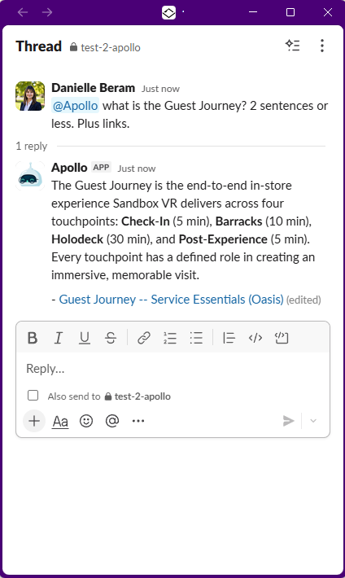
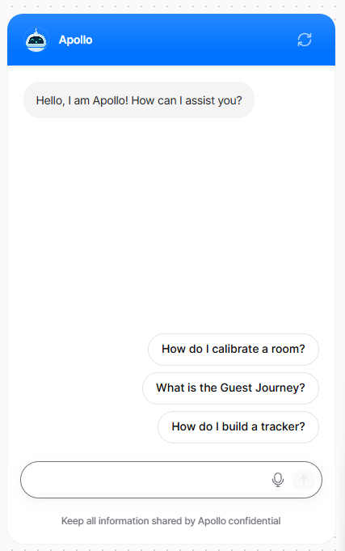
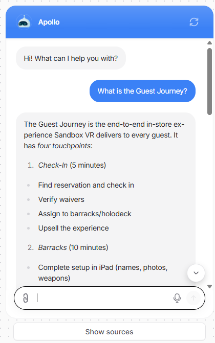
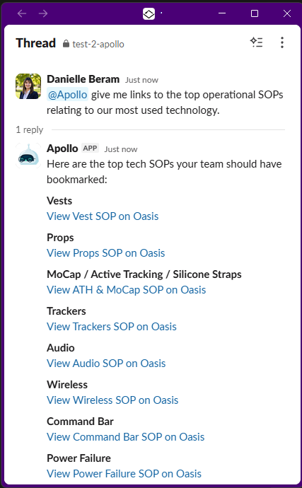

Internal AI knowledge assistant
Apollo: a governed AI assistant for 90 locations
Apollo gives frontline staff a faster way to find approved operational guidance during a shift, in five languages.
| Role | Use-case definition, source organization, answer boundaries, correction workflow, approval process, and maintenance |
| Problem | Frontline staff had to submit a ticket, interrupt a manager, or search operational documents during a shift |
| Deliverable | An AI assistant connected to 116 governed knowledge-base source files, with visible sources and a reliability portal |
| Result | Real-time guidance across 90 locations and 5 languages; a contributor to a broader enablement-system decline in process-confusion escalations |

A question during a live shift
“What is the Guest Journey?”
A store team member or manager who needed an operational answer had three options: submit a support ticket and wait, interrupt a manager, or search SOPs spread across several platforms.
What the employee sees
The response includes a visible source.



Where the answer comes from
The chat box was the easy part. The harder work was deciding which source the assistant could use, when it should decline to answer, and how an incorrect response would be corrected.
Apollo retrieves from 116 governed knowledge-base source files rather than relying on an unexplained answer
Decisions and maintenance I own
I defined which questions Apollo could answer, which documents it could use, how those documents were formatted, who approved changes, how employees reported a bad answer, and how source material was reviewed after launch.
I also built the reliability portal used to review correction requests, approve changes, record an audit trail, monitor weekly metrics, and prepare updated source files for retraining in Chatbase.
Preparing the source material
The 116 governed knowledge-base source files follow a shared taxonomy and formatting standard. Each file identifies its purpose, the questions it should answer, approved terminology, escalation paths, and links to the relevant operating procedure.
The files are divided so the assistant can retrieve the relevant passage without combining unrelated procedures. Source ownership and approval remain with people, not the assistant.
What Apollo will not answer
Answer boundaries keep the assistant inside approved operational guidance. Questions that require local judgment, private employee information, or an unsupported procedure are redirected to the appropriate owner or escalation path.
Sanitized artifact
Grounded-answer pattern
A representative answer structure using generic operational content. It shows the concise response, action boundary, and visible source pattern used to support trust.
Complete the safety and equipment checks before the first guest arrival. If an item fails inspection, pause that station and follow the escalation path rather than attempting an unapproved workaround.
“The biggest improvement for me is consistency… Apollo gives the same answer from the same approved source regardless of who asks or where they work.”
Multi-Unit Leader · exact feedback-survey quotation
What changed after launch
System-wide result across training, source maintenance, and Apollo; not attributed to Apollo alone
- Operational guidance available across 90 locations and 5 languages, without requiring a support ticket for every question.
- Contributed to a system-wide decline in process-confusion escalations from roughly 40% to about 5%. This result reflects the combined effect of training redesign, source maintenance, and Apollo; it is not attributed to the chatbot alone.
- A shared approved source is available across the network. Employees can see which source document was used instead of relying only on who is available to answer.
- Reliability work continues after launch. Corrections, approvals, source replacement, retraining, and weekly metrics are part of the operating routine.
Public-safe examples
Because the operational content is proprietary, public examples use placeholder procedures. Supporting proof can include:
- A redacted view of the Apollo chat interface answering a generic question
- A sample knowledge-base source file in the retrieval format, using placeholder content
- A diagram of how the assistant retrieves from governed source files and displays the source with the answer
Reliability after launch
Any team member can flag an incorrect answer. The reliability workflow identifies the affected source files, drafts format-compliant changes, and holds them for human review. Approved changes retain version history and an audit trail before the updated files replace the prior sources.
Significant errors can be escalated through Slack while they are affecting frontline work. The weekly routine reviews the correction queue, investigates failed or stuck items, confirms the Google Drive backup, replaces updated files in Chatbase, retrains the assistant, and records patch notes when changes were applied.